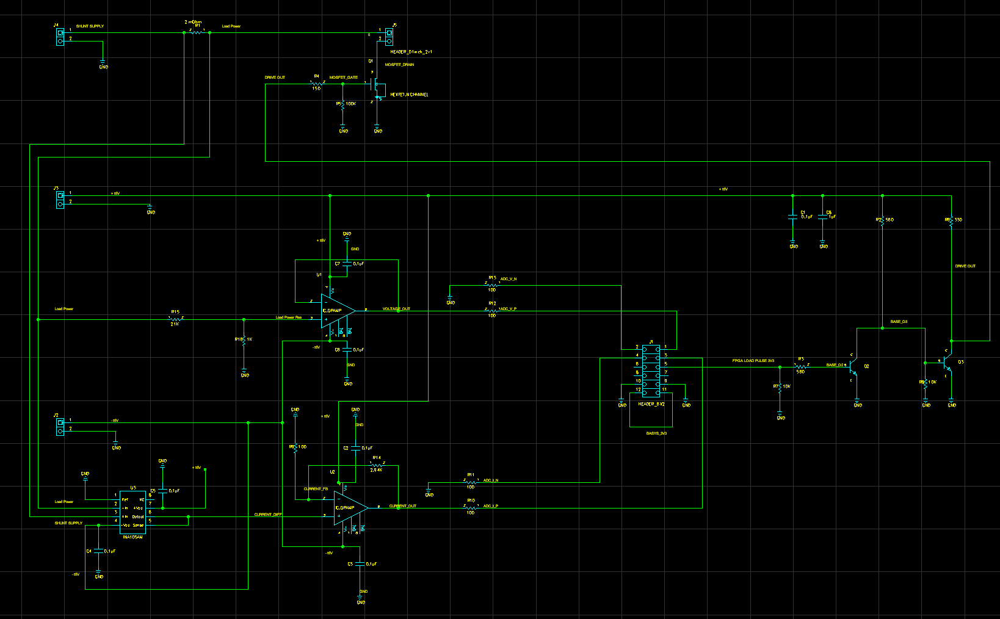
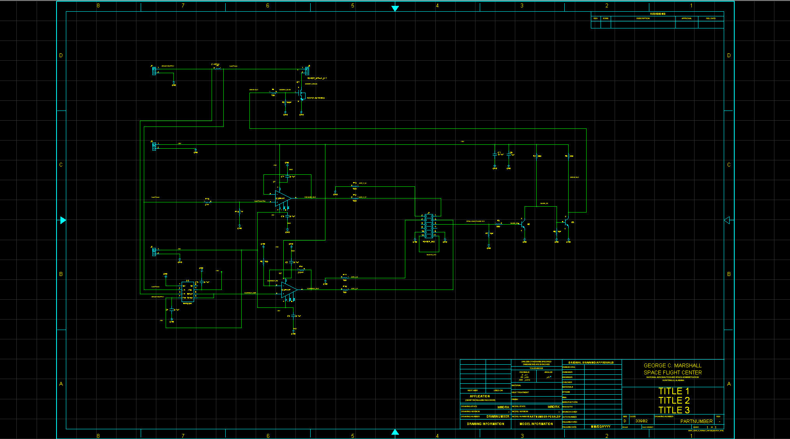
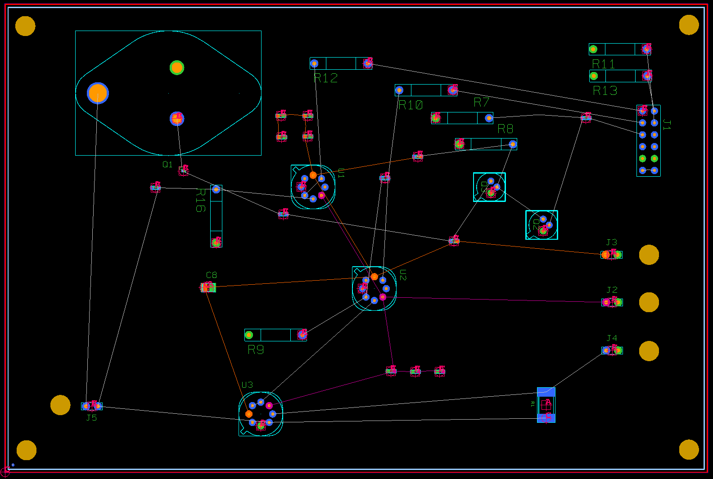

Server Power
Telemetry
An analog sensing and FPGA acquisition system for investigating voltage and current transients in server power delivery.
- Platform
- Basys 3 / XADC
- Hardware
- Schematic, PCB layout, and routing complete
- RTL
- VHDL / UART interface in progress
- Verification
- Python, cocotb, NVC
From analog sensing to FPGA acquisition
I am developing the voltage and current sensing hardware alongside the VHDL acquisition and display interfaces. The system targets the Basys 3 XADC, with a 1 MSPS acquisition goal for observing short power transients.
Sensing hardware and PCB development
The schematic combines a shunt-based current-sensing path, voltage scaling and buffering, and a transistor gate driver for an FPGA-controlled MOSFET load switch. The conditioned voltage and current signals are intended for the XADC inputs, while a separate digital output controls load pulses.
The schematic, PCB layout, and routing are complete in Xpedition. The placement capture below documents an earlier stage of the board design.






VHDL control and display
I have written UART receive and transmit modules and a multiplexed four-digit
seven-segment display driver. The telemetry top level uses received
v and i commands to select voltage or current display modes.
The current display uses fixed placeholder values while the acquisition path is developed. UART response-message sequencing is still in progress. My verification workflow uses cocotb with NVC; full-system acquisition validation is still ahead.
Integration ahead
Next steps include integrating the sensing hardware with the FPGA, and checking the acquisition path against lab measurements. Sampling performance and transient-capture results will be reported after that testing.